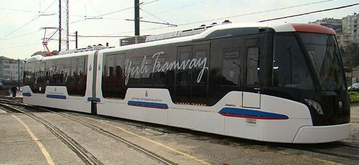
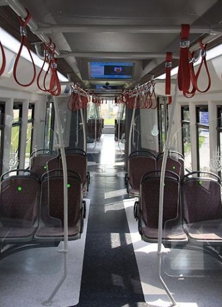
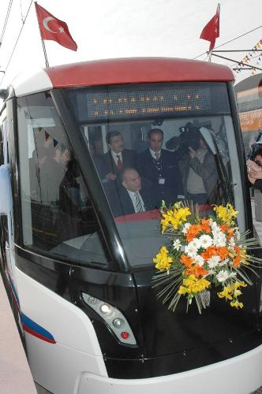
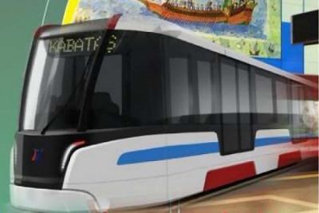
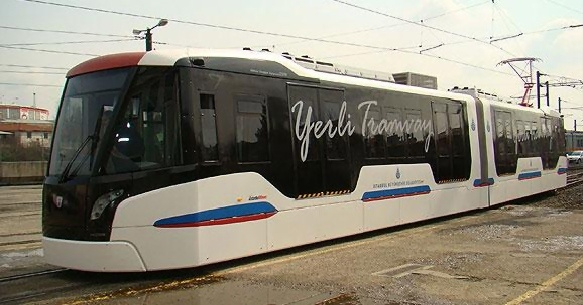

|
Ýstanbul Ulaþým A.Þ. tarafýndan 1999 yýlýnda prototipi yapýlmýþ olan Türkiye'nin ilk yerli tramvay aracý RTE 2000'in devamý ve en geliþmiþ modeli RTE 2009, Edirnekapý-Topkapý Tramvay Hattý'nýn açýlýþýyla birlikte 18 Mart günü Ýstanbul raylarýyla buluþtu (RTE: Railway Transport Equipment). Yeni tasarýma ve geliþmiþ teknolojik sistemlere sahip tramvay, makinistin devre dýþý kalmasý halinde otomatik olarak fren yapabiliyor.
Yerli tramvayýn 1 milyon Euro'ya mal olduðunu ve Türk mühendislerin 200 bin saati aþkýn çalýþma yaptýðýný kaydeden Topbaþ, "Eðer biz bu vagonu yurtdýþýndan alsaydýk 2,5 milyon Euro'ya mal olacaktý. Artýk Türklerinde vagon yapabileceðini herkese gösterdik." Þeklinde konuþtu.
Konuþmalarýn ardýndan Edirnekapý-Topkapý tramvay hattý ve yerli tramvay RTE 2009 hizmete açýldý. Açýlýþ kurdelesinin kesilmesinin ardýndan Ýstanbul Büyükþehir Belediye Baþkaný Kadir Topbaþ, yerli tramvayýn Vatman koltuðuna oturdu. Basýn mensuplarýný taþýyan ve Kadir Topbaþ tarafýndan kullanýlan yerli tramvay, Þehitlik duraðýna kadar seyretti.


2009 yýlý Haziran ayý içinde Ýstanbullularýn hizmetine ikili dizi olarak alýnacak olan 2009 model tramvay araçlarýnýn dýþý ve içi; görsel ve endüstriyel tasarýmý ile modern, rafine, ferah, dinamik ve özgün; Bu model, Ýstanbul Teknik Üniv., Yýldýz Teknik Üniv. ve Marmara Üniversitesi'nden akademisyenlerle yapýlan iþbirliðiyle, 30'u aþkýn endüstriyel tasarým eskizi arasýndan seçildi.

RTE 2009 için;
- 200.000 saati aþkýn mühendislik saati çalýþmasý yapýldý,
- 10 kilometreyi aþkýn kablo çekildi,
- 30 binden fazla kablo ucu birleþtirildi,
- 300 saati aþkýn teste tabi tutuldu,
- Strain-gauge'ler (Birim Uzama Ölçerler) ile aracýn kritik bölgelerinde, 40 tona kadar gerilim/dayaným ölçümleri yapýldý,
- Tren, makinistin devre dýþý kalmasý halinde otomatik olarak frenleme saðlayan Akýllý Sürüþ Sistemi ile donatýldý.
- Yaklaþýk maliyeti 1 Milyon Euro olan araçta yan aynalar yerine, kamera sistemi kuruldu,
Yepyeni görsel tasarýmý ve son teknolojik özellikleri ile yerli tramvay aracý RTE 2009'un teknik özellikleri þöyle;
| Araç boyu |
25 m |
| Araç geniþliði |
2.65 m |
| Araç yüksekliði (raydan) |
3.26 m |
| Araç boþ aðýrlýðý |
32 ton |
| Yolcu sayýsý (m^2'de 8 kiþi) |
320 |
| Maksimum Hýz |
80 km/saat |
| Ýþletme hýzý |
50 km/saat |
| Minimum dönme çapý |
30 m |
- SMD Ledli tabela sistemi yolcularý; geçilen istasyonlarý kýrmýzý, gidilecek istasyonu ise yeþil ýþýðýn yanýp sönmesi þeklinde bilgilendirecek.
- Son teknoloji CCTV kameralý izleme sistemi ile araç içi güvenliði tam.
GPRS kaynaklý LCD yayýn ve bilgilendirme sistemine sahip Yerli Tramvaydan, 2012'ye kadar seri üretime geçilerek, 18 adet üretilmesi hedefleniyor...

1999 yýlýndaki ilk yerli prototipten, 2009 model prototipe kadar tüm çalýþmalarý Ýstanbul Büyükþehir Belediyesi iþtiraklerinden Ýstanbul Ulaþým A.Þ. tarafýndan gerçekleþtirilen Yerli Araç Projesi ile Ýstanbul kendi yapýsýna en uygun raylý sistem araç ihtiyacýný, daha ekonomik karþýlayabilme gücü kazanýrken, demiryolu teknolojilerinde bilgi ve tecrübeyi, uzman personeli de daha üst boyutlara taþýyor. Çalýþmalar ayný zamanda Ýstanbul'un teknolojik baðýmlýlýðýný azatlamayý da hedefliyor.
Halen Edirnekapý-Sultançiftliði hattýnda yolcu taþýmacýlýðý yapan, 300 kiþi kapasiteli, 25 metre uzunluðundaki RTE 2000 modeli de üretildiði günden bu yana 300 bin km yol yapýp, 5 milyon yolcu taþýdý.
Yerli üretimde yeni hedef: RTE 2011'i üretmek.
Sonrasýndaki hedef ise Hafif Metro Araçlarýnýn seri üretimine ve Metro, Hýzlý Tren, Monoray gibi yeni raylý taþýt teknolojilerine geçmek...
|